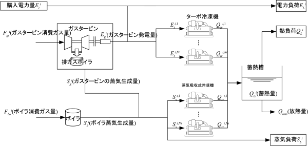

|
Optimization benchmark problem for energy plant
operational planning problem
Summary
In the energy plant, energies such as electricity, steam, and cold/hot heat are provided by various supply equipments such as the electrical generator, the boiler, and the heat source equipment.
The energy plant operational planning problem is formulated to determine a equipment operational plan so that electrical power purchase cost and gas purchase cost are minimized with satisfying demand-and-supply balance constraints for each energy, mechanical constraints of equipments, and operational constraints of equipments.
This benchmark problem provides the 24 time plant operational problem with a gas turbine, a boiler, a centrifugal chiller, and two steam driven absorption refrigerating machines as shown in Fig. 1.
The specific formulation is given in the references [2] and [3].

Fig. 1: The energy plant [1] (the characters in the figure are written in Japanese)
Class and scale
- Class: Mixed-integer nonlinear optimization problem
- Number of decision variables: 240 (Continuous: 120, Discrete: 120)
- Number of inequality constraints: 288 (Linear: 288, Nonlinear: 0)
- Number of equality constraints: 134 (Linear: 0, Nonlinear: 134)
Known Feasible Solutions (OFV is objective function value. Sol. is solution.)
| Method |
OFV |
Constraint violations |
Ref. |
Reporter |
Sol. |
| Total |
Tolerance |
| Iterative piecewise linear approximation × LP-based MILP solver |
3999631.278 |
2.44 × 10-10 |
1.0 × 10-9 |
[4] |
N. Inui, et. al. |
Sol.† |
| Random Search × Tabu Search × SQP |
3999635.845 |
6.43 × 10-12 |
1.0 × 10-10 |
[2] |
T. Okamoto, et. al. |
Sol.† |
| Transformation using ceiling function × DE |
4052185.662 |
3.93 × 10-14 |
1.0 × 10-10 |
[2] |
T. Okamoto, et. al. |
Sol.† |
†Replace the obtained file by "P1_solution_x.txt" in the source code.
Source code
References
| [1] |
Investigating R&D committee on new development of computational intelligence techniques and their applications to industrial systems: "Optimization benchmark problems for industrial applications", IEEJ Tech. Rep., No. 1287, Section 3.2 (2013) [in Japanese] |
| [2] |
T. Okamoto, N. Adachi, R. Suzuki, S. Koakutsu, and H. Hirata: "The energy plant operational planning problem and applications of optimization methods to the problem", Proc. of the 2014 Annual Meeting on the Institute of Electrical Engineers of Japan, Vol. 4, 4-S21(17)–(20) (2014) [in Japanese] |
| [3] |
R. Suzuki and T. Okamoto: "An introduction of the energy plant operational planning problem: A formulation and solutions", Proc. of the first IEEJ International Workshop on Sensing, Actuation, and Motion Control (SAMCON2015), IS1-5 (2015) |
| [4] |
N. Inui and K. Tokoro: "Finding the feasible solution and lower bound of the energy plant operational planning problem by an MILP formulation", Proc. of the first IEEJ International Workshop on Sensing, Actuation, and Motion Control (SAMCON2015), IS1-6 (2015) |
Change log
- June 5th, 2015: A new solution is added to Known Feasible Solutions.
- June 5th, 2015: The bibliographical data of the reference [3] is updated.
- Dec. 4th, 2014: The MATLAB version of the source code is released.
- Dec. 3rd, 2014: English page is released.
- June 3rd, 2014: Tolerance of constraint violations can be read from the external file.
- Mar. 13th, 2014: The source code is updated based on the reference [2].
- Nov. 7th, 2013: The source code based on the reference [1] is released.
|
|